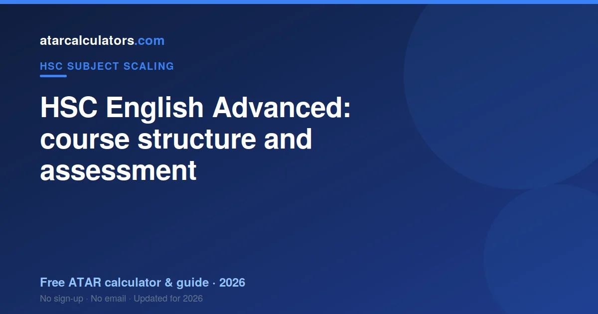
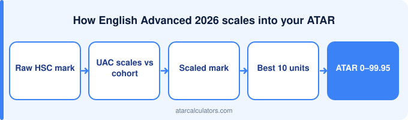

HSC English Advanced is a Year 12 English course covering the Common Module (Texts and Human Experiences) and Modules A, B and C, building on the Year 11 course. Your HSC mark combines your moderated internal assessment with your external exam. After that, UAC scales your performance for your ATAR. Always confirm the current modules and assessment with NESA, since syllabus details can change.
Key takeaways
- English Advanced is a Year 12 English course.
- It covers the Common Module and Modules A, B and C.
- Your mark combines internal and external assessment.
- The exam is set by NESA across two papers.
- Confirm all details with NESA.
- Then scaled by UAC for your ATAR.

Course overview
HSC English Advanced is an English course studied over Year 12, building on the Year 11 (Preliminary) course. It develops sophisticated skills in reading, analysing and composing texts through a common module and three further modules, with a focus on how texts make meaning.
So the Year 12 course is where your HSC mark is earned, drawing on the foundation from Year 11. The structure below is a guide; always confirm the current course with NESA, since details can be updated.
What the course covers
The Year 12 course covers the Common Module (Texts and Human Experiences), Module A (Textual Conversations), Module B (Critical Study of Literature) and Module C (The Craft of Writing). Use the current NESA syllabus for the exact set texts and requirements.
Each part of the course has its own focus and its own dot points in the syllabus, which define exactly what you can be examined on. So use the current NESA syllabus as your definitive guide to the content.
How it is assessed
Your HSC English Advanced mark averages moderated school assessment with your aligned exam mark. English is compulsory, so these units are always in your calculation.
The exam structure
The English Advanced exam demands multiple full responses under time. An unfinished essay loses marks structurally, however strong its opening.
Internal assessment
English Advanced assessment spans several task types across the year, testing different skills. A strong year cushions a hard exam question.
Confirm details with NESA
Syllabus content, module names and assessment details can change between years, so this guide should be treated as an overview, not the final word. The authoritative source is always the current NESA syllabus and assessment materials.
So before you rely on any specific detail, check it against NESA’s current documents for English Advanced. This ensures you are studying the right content and preparing for the correct exam format.
Preparing for HSC English Advanced
Preparing for English Advanced means writing original arguments to unseen prompts, timed. There is no content to cram.
Scaling and your ATAR
UAC scales English Advanced above Standard, because students who elect Advanced tend to be stronger across their whole HSC. It contributes 2 units to your best 10.
See how it scales
To see how a English Advanced mark scales, use our HSC English Advanced scaling calculator. It gives an indication of how your mark converts, so you can see how the subject fits into your ATAR.
Treat the result as indicative, since scaling changes each year, and confirm all course details with NESA.
The Year 11 foundation
The Year 12 English Advanced course builds on the Year 11 (Preliminary) course, which introduces the foundational concepts and skills. A solid grasp of the Year 11 material makes the Year 12 content far more manageable.
So do not treat Year 11 as separate or unimportant. The understanding you build there underpins your Year 12 performance, and gaps from Year 11 can make the HSC course harder than it needs to be.
Skills the course develops
English Advanced builds argument under time pressure — the skill assessed and the skill practised are the same thing.
How your marks are weighted
English Advanced assessment weighting spreads across varied task types, which is a genuine hedge against one bad day.
Planning your year
Plan your English Advanced year around writing volume. Reading the texts is the entry fee, not the preparation.
From course to ATAR
English Advanced is assumed knowledge for many humanities and law pathways, and it is compulsory regardless of where you are headed.
Balancing content and skills
Success in HSC English Advanced comes from balancing knowing the material with the skill to apply it in clear, well-structured responses under time pressure. Knowing the content is necessary but not sufficient; the exam also tests how well you argue and write. Both need deliberate practice.
So divide your preparation between building understanding and rehearsing responses through past papers. In English Advanced, students who build both together tend to outperform those who only revise content, since the exam rewards clear, well-supported answers.
Common questions
What is in the HSC English Advanced course?
HSC English Advanced covers the Common Module (Texts and Human Experiences) and Modules A (Textual Conversations), B (Critical Study of Literature) and C (The Craft of Writing). Each part has its own syllabus dot points defining what can be examined. Always confirm the current content with NESA, since syllabus details can change.
What modules does HSC English Advanced cover?
HSC English Advanced covers the Common Module (Texts and Human Experiences) and Modules A, B and C. Confirm the current modules and set texts with NESA, since syllabus details can change.
How is HSC English Advanced assessed?
Your HSC mark in English Advanced combines your internal school assessment mark, moderated against your cohort, with your external exam mark. These are averaged to give your HSC mark, which is aligned to a band.
What is the HSC English Advanced exam structure?
HSC English Advanced is examined in two papers: Paper 1 on the Common Module, with short answers and an extended response, and Paper 2 on Modules A, B and C, with extended responses. The exact format and mark allocation are set by NESA, so confirm them from the current syllabus and past papers.